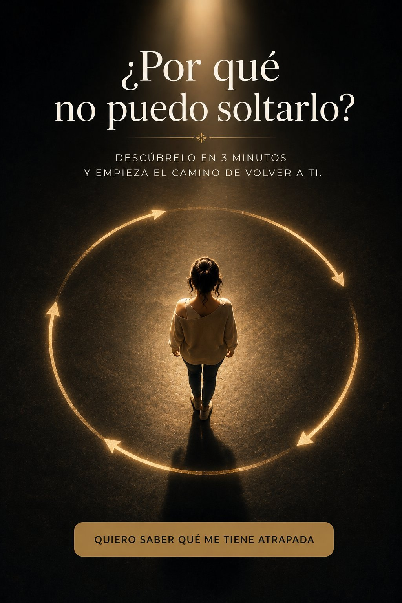

No es debilidad, no es que ames demasiado y no necesitas su explicación para sanar. Estás atrapada en un ciclo que se repite solo — y mientras no sepas en qué punto estás, cada intento de soltarlo te va a regresar al inicio.
Llevas tiempo creyendo que si fueras "más fuerte" ya lo habrías soltado. O que si él te diera una explicación, un cierre, una última conversación… por fin podrías pasar la página.
Pero mira lo que pasa cada vez:
¿Te suena? Eso no es debilidad. Es un ciclo — y los ciclos no se rompen con fuerza de voluntad.
Por eso todo lo que has intentado no ha funcionado: bloquear su número ataca UNA pieza del ciclo, pero el ciclo te atrapa en la siguiente. Es como tapar una gotera mientras la tubería sigue rota.
Y hay algo más que nadie te ha dicho: no se rompe igual en todas las etapas. Lo que necesita una mujer atrapada en la espera no es lo mismo que necesita una atrapada en la culpa o en la recaída. Si no sabes en cuál estás, estás luchando a ciegas.
Lo que estás viviendo tiene nombre en psicología. Y cuando lo entiendas, vas a dejar de culparte.
Eso tiene nombre: refuerzo intermitente. Cuando el cariño llega de forma impredecible, el cerebro no se desengancha… se engancha MÁS. Es el mecanismo de las máquinas de casino: nadie se queda pegada a una máquina que nunca paga, ni a una que paga siempre — la gente queda atrapada en la que paga de vez en cuando. No estás enganchada a él a pesar de que aparece y desaparece. Estás enganchada porque aparece y desaparece.
La dopamina — la química de la adicción — no se dispara cuando recibes el mensaje. Se dispara en la espera incierta del mensaje. Esa mezcla de nervios, esperanza y nudo en el estómago no es amor: es el circuito pidiendo su dosis. Por eso un hombre estable y presente a veces te parece "aburrido" — tu sistema aprendió a confundir paz con falta de emoción.
La psicología del apego lo describe desde hace décadas: cuando alguien importante se aleja sin explicación, tu sistema de apego se activa en modo protesta — escribir, llamar, revisar señales. Es un mecanismo de supervivencia emocional, no falta de dignidad. Por eso la fuerza de voluntad no te ha funcionado: no estás luchando contra un sentimiento. Estás luchando contra un circuito.
Y los circuitos no se rompen con fuerza.
Se rompen sabiendo exactamente dónde cortarlos.
Un test de 12 preguntas (3 minutos) que identifica en cuál de las 5 etapas del ciclo está atrapado tu patrón:
Cada etapa se rompe distinto. Lo que necesita una mujer atrapada en La Espera no es lo que necesita una atrapada en La Culpa. Por eso tu resultado no es una etiqueta — es un mapa.
¿Cuántas horas se te fueron esta semana en revisar su perfil y darle vueltas a qué quiso decir con ese "ok"? El precio real no son los $7. El precio real es otro mes atrapada en el mismo ciclo — esperando que él te dé una claridad que no va a llegar. La claridad te la vas a dar tú. En 3 minutos. Hoy.
Haz el test. Lee tu resultado completo. Si al terminar no piensas "esto me describe exacto", escríbeme dentro de los próximos 7 días y te devuelvo tus $7. Sin preguntas, sin formularios eternos, sin hacerte rogar — de eso ya tuviste suficiente.
Todo el riesgo lo asumo yo. Tú solo asumes 3 minutos.
3 minutos el test. Tu resultado y tu Guía de Ruptura los recibes de inmediato.
Es normal — el ciclo es uno solo y todas las etapas se tocan. El Diagnóstico identifica tu etapa DOMINANTE: aquella donde tu patrón se atora con más fuerza y donde cortar el circuito tiene más efecto para ti.
No. Es una herramienta de claridad y autoconocimiento basada en psicología del apego y del comportamiento. No reemplaza acompañamiento psicológico profesional — y si estás pasando por un momento muy difícil, buscar apoyo profesional es un acto de amor propio, no de debilidad.
Especialmente en ese caso. El ciclo no necesita que estén juntos para seguir girando — gira en tu cabeza cada vez que revisas su perfil o relees conversaciones.
Compras por Hotmart de forma segura y de inmediato recibes tu acceso al test. Al terminarlo, descargas tu Guía de Ruptura + el bonus en PDF.
P.D. Si llegaste hasta aquí abajo, déjame decirte algo: llevas semanas — quizás meses — buscando la respuesta en él. En su silencio, en sus señales, en lo que quiso decir con ese último mensaje. Y la respuesta nunca estuvo ahí. Está en tu patrón. Son $7 y 3 minutos para verlo por fin con claridad.
No estás loca por necesitar claridad.
Lo que te rompe no es la distancia: es que te dejen adivinando si todavía importas.
Hoy dejas de adivinar.